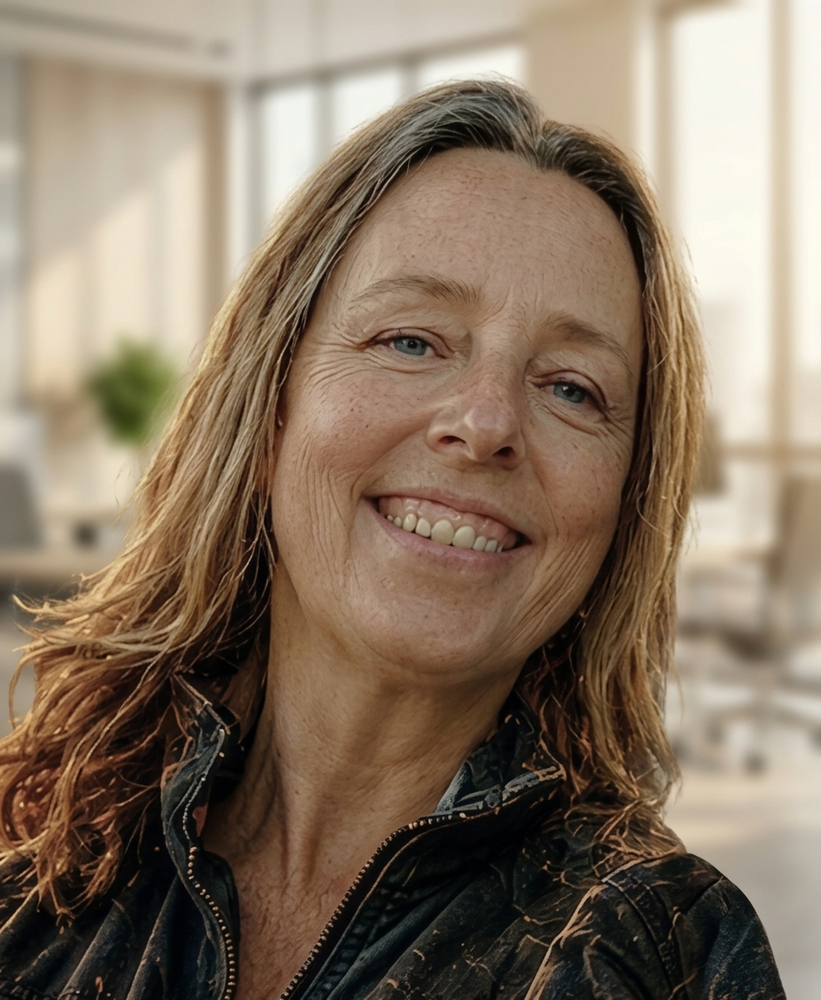
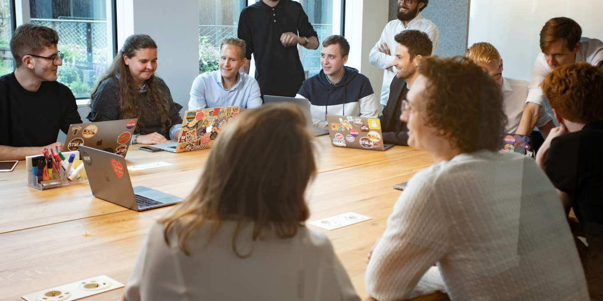
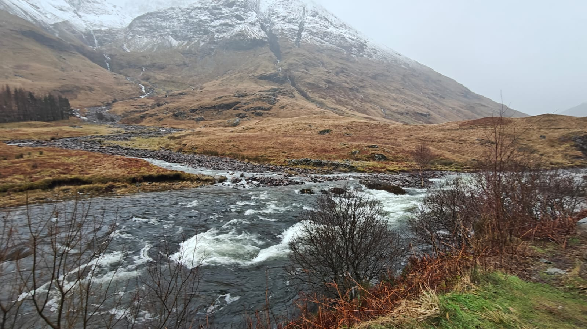
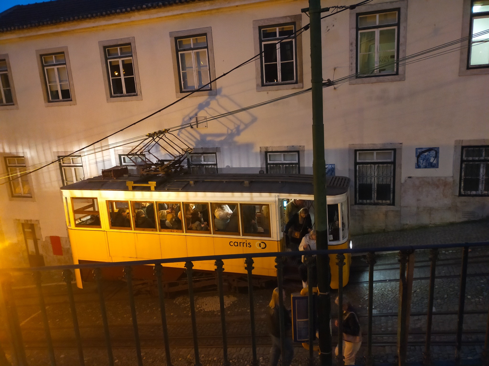
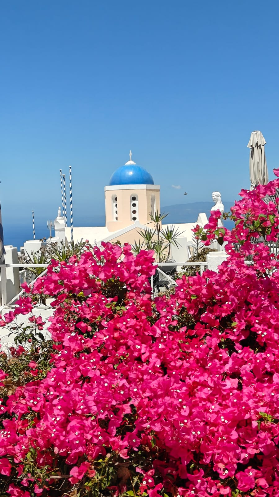
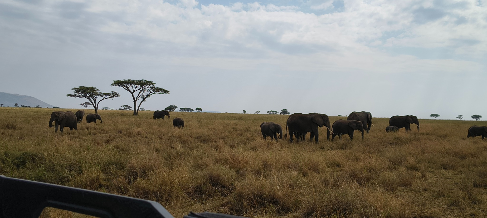
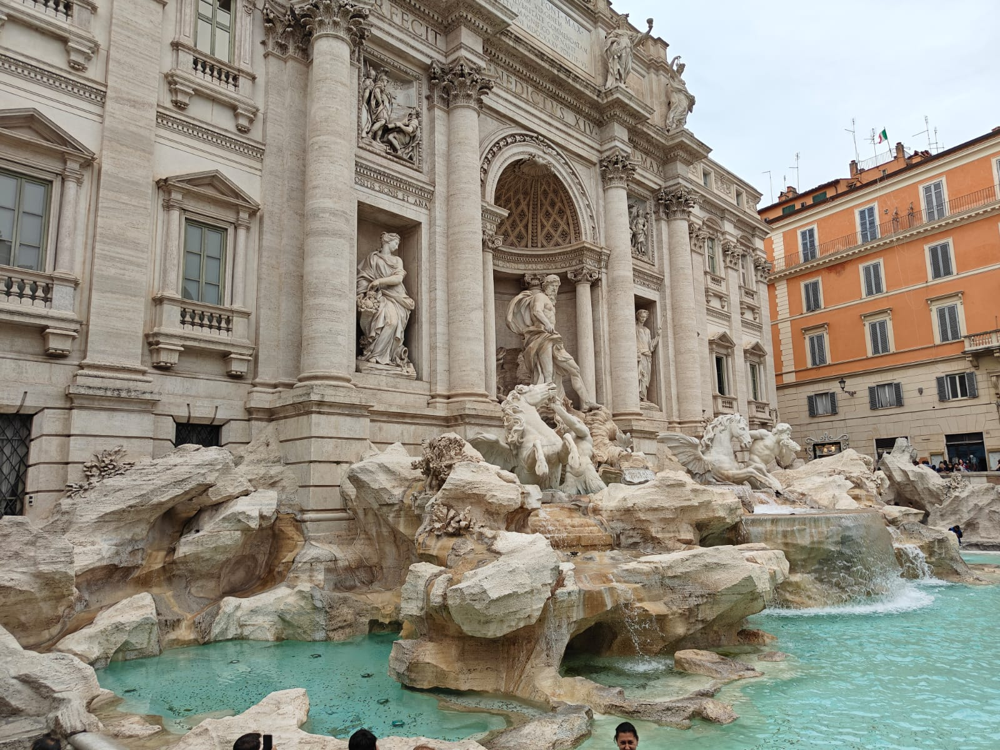
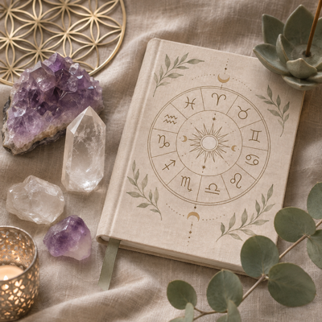

Analyser et structurer
Esprit de synthèse, organisation et capacité à mettre en perspective des informations complexes.
STRATÉGIE RH · TRANSFORMATION · DÉVELOPPEMENT DES TALENTS
Postes & missions
CDI, CDD, missions ou management de transition
Conjuguer vision stratégique RH, accompagnement des managers, développement des compétences et conduite des transformations, avec une attention constante aux enjeux humains et opérationnels.

MON POSITIONNEMENT
J’articule compréhension des enjeux de l’entreprise, analyse des situations RH et accompagnement des équipes pour transformer les orientations en actions concrètes. Mon parcours associe expérience RH opérationnelle, développement des compétences, projets transversaux et conduite du changement.
Esprit de synthèse, organisation et capacité à mettre en perspective des informations complexes.
Écoute, empathie et conseil au service des managers, des collaborateurs et des collectifs.
Curiosité intellectuelle, adaptabilité et recherche de solutions dans des environnements changeants.
Ces aptitudes ont notamment été identifiées lors d’un bilan de compétences en 2023, croisant autoévaluation et regards de l’entourage professionnel.
MA MANIÈRE D’EXERCER LES RH
J’accorde une importance particulière à la compréhension approfondie des situations, à l’écoute des différents acteurs et à la recherche de solutions durables. J’aime prendre du recul pour analyser les enjeux, identifier les interactions et construire des propositions argumentées.
Attachée à la qualité des relations humaines et au dialogue, je sais également défendre mes convictions et porter des projets de transformation lorsque leur pertinence est établie. Cette approche nourrit ma conception du rôle de Responsable RH : conjuguer vision stratégique, discernement, proximité humaine et capacité d’action.
Cette présentation traduit mon expérience et ma réflexion sur mon fonctionnement professionnel, nourries notamment par un bilan de compétences et des outils de connaissance de soi.
TROIS DIMENSIONS COMPLÉMENTAIRES

Une pratique de l’opérationnel RH acquise chez Leroy Merlin : recrutement, promesses d’embauche, contrats de travail, temps de travail, rémunérations et variables de paie, préparation des People Review. Accompagnement quotidien des managers.
Concevoir, structurer et piloter des projets RH. Accompagner les transformations et favoriser l’engagement.
Accompagner les parcours, développer les compétences et concevoir des dispositifs de formation adaptés aux besoins du terrain.
DE L’ANALYSE À L’ACTION
Conception d’un portail Parcours Professionnels, mise en forme sous SharePoint.
Accompagnement du Reclassement Interne.
Analyse croisée des usages, méthode de diagnostic et propositions d’accompagnement.
INDUSTRIE, RETAIL, SERVICES & FORMATION
Plus de 20 ans d’expérience : projets RH stratégiques chez ArcelorMittal, formation technique et réglementaire chez Coca-Cola, opérationnel RH et coordination chez Leroy Merlin, et pilotage de la formation continue au sein de l’École des avocats NORD OUEST.
Explorer mon parcours ↗APPRENDRE & TRANSMETTRE
ESSCA
Université de Lille · M1 & M2 · Major de promotion en M2
Université de Lille
EDHEC Lille
DEMOS · 1er trimestre 2027
APPRENDRE - FAIRE UNE PLACE À LA DIVERSITÉ - S’ENGAGER
Lauréate du prix André Lebrun 2024. Relais handicap et accompagnatrice de projets pour la Fondation Leroy Merlin. L’inclusion est une valeur forte pour moi. Ces expériences, renforcées par une formation de proche aidant autour de l’autisme, nourrissent ma pratique des Ressources Humaines au quotidien.
LE REGARD DES AUTRES
Des regards croisés de professionnels avec lesquels j’ai eu l’occasion de collaborer.
« Si vous voulez faire bouger les lignes, Rose-Marie est la bonne personne ! »Transformation
« Elle sait garder une attitude positive même dans des situations de réorg’ turbulentes. »Transformation
« Brillante, investie, fiable et pleine d’humour. »Qualités humaines
« Ayant côtoyé Rose Marie dans le cadre de mes missions, je ne peux que vous recommander ses compétences ! »Expertise RH
« Au delà d’avoir rencontré une professionnelle de qualité, j’ai rencontré une femme d’une grande humanité. »Qualités humaines
« Si vous cherchez quelqu’un qui allie compétences en RH, professionnalisme et bonne humeur, foncez ! »Expertise RH
« Une belle rencontre professionnelle, je recommande. »Qualités humaines
« Tu as toujours mis beaucoup d’énergie et de cœur dans ce que tu entreprends. »Parcours
« Écoute, Accompagnement, Analyse, Compréhension du contexte. »Qualités humaines
« Un profil que je recommande à 200%. »Expertise RH
Extraits de commentaires LinkedIn. Consulter mon profil LinkedIn ↗
AU-DELÀ DU PROFESSIONNEL
Les grands espaces, les villes vivantes et les découvertes qui restent. Quelques souvenirs de mes voyages des deux dernières années.

Les grands espaces et la beauté brute des paysages.

Une ville vivante qui se découvre au fil de ses reliefs.

Les paysages volcaniques et le caractère insulaire.

Une girafe qui traverse la route, un troupeau d’éléphants, une nuit sous tente dans la savane.

L’émerveillement devant un patrimoine architectural grandiose.
Le jardinage et le plaisir de prendre soin des végétaux.

Astrologie, lithothérapie et approches énergétiques.